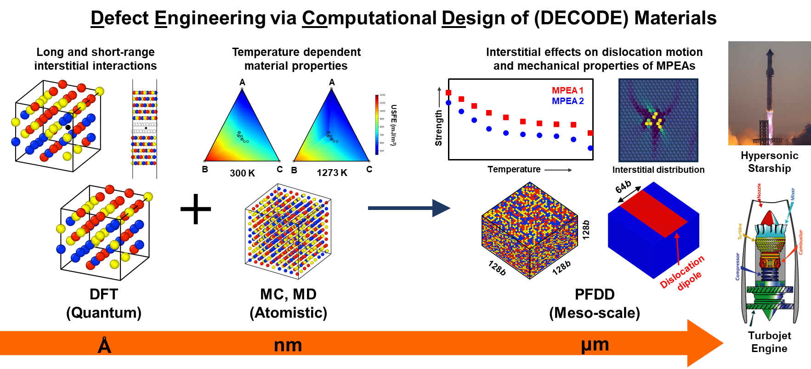
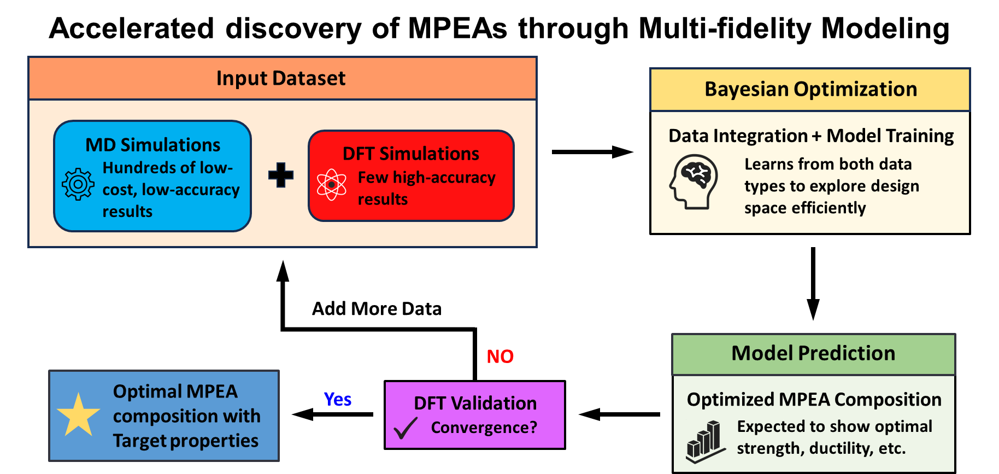
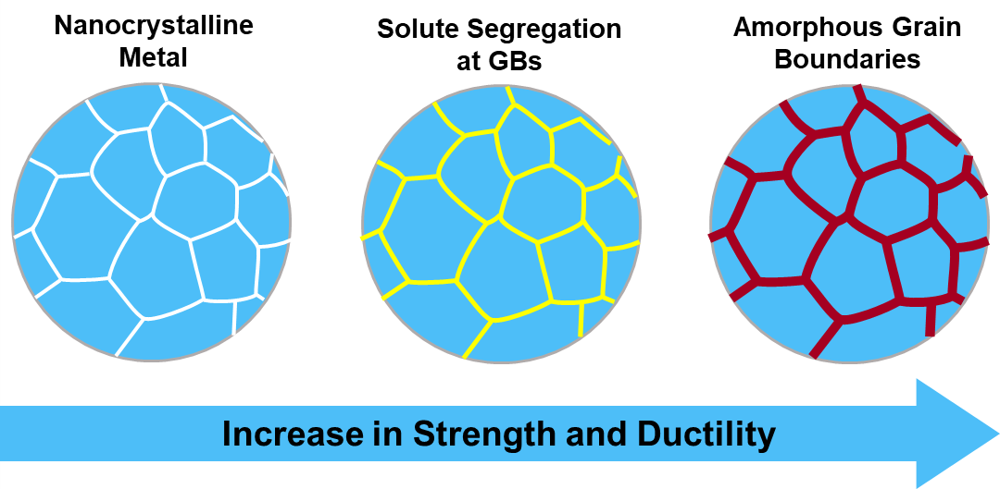
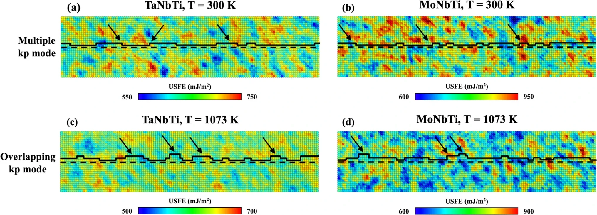
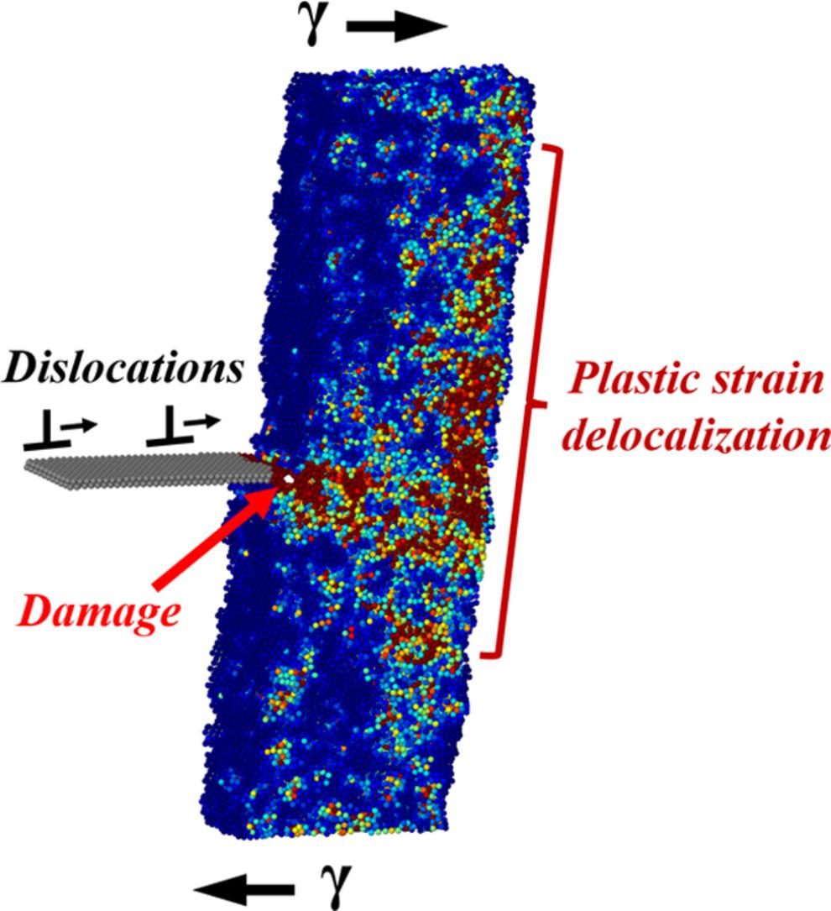
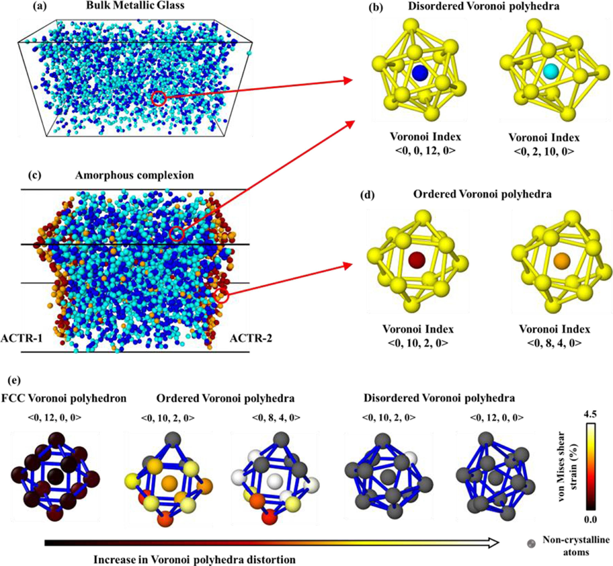
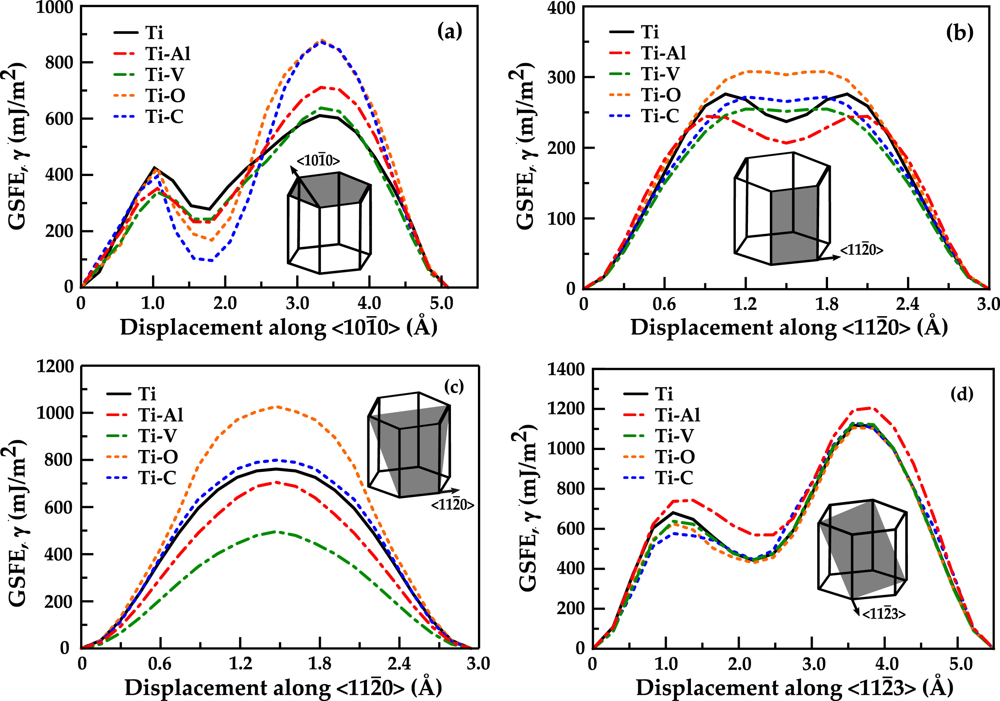
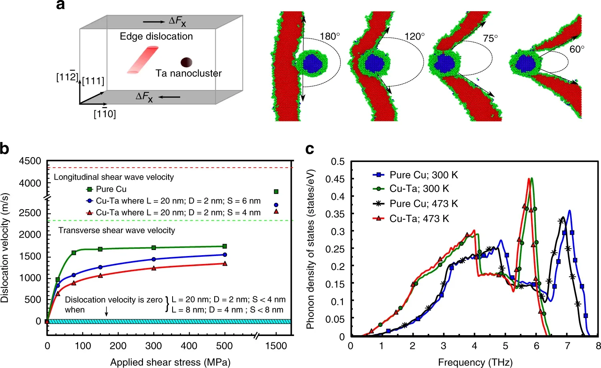

Defect Engineering via Computational Design
Postdoctoral Researcher · Department of Mechanical Engineering
University of California, Santa Barbara · Beyerlein Research Group
Postdoctoral Researcher, Mechanical Engineering
University of California, Santa Barbara
Beyerlein Research Group
I am a Postdoctoral Researcher in the Department of Mechanical Engineering at the University of California, Santa Barbara, working in the group of Prof. Irene J. Beyerlein. My research focuses on designing alloys using AI- and ML-driven approaches, predicting multi-length-scale behavior by integrating atomistic to continuum models, and engineering defects as a powerful lever to optimize material properties.
Building on over a decade of expertise in multi-physics and multiscale modeling, I am establishing the DECODE (Defect Engineering via Computational Design) Materials Lab, dedicated to advancing defect-informed computational design of materials and delivering transformative insights across diverse application areas:from aerospace and hypersonic vehicles to energy storage and quantum technologies.
My research program bridges quantum-mechanical first-principles (DFT) calculations, molecular dynamics (MD), and mesoscale phase-field dislocation dynamics (PFDD) to uncover the fundamental mechanisms governing material performance at every length scale. I have developed deep expertise in refractory multi-principal element alloys (MPEAs), nanocrystalline alloys, amorphous grain boundary complexions, and superconducting niobium, with growing efforts in AI/ML-accelerated materials discovery and 2D MXenes for energy storage.
The DECODE Materials Lab pursues four interrelated research thrusts centered on defect-informed computational design of advanced materials.
Our research spans quantum to continuum length scales, enabling a comprehensive mechanistic understanding of material behavior from individual atoms to engineering components. We integrate and extend these methods to tackle problems at the forefront of materials science.
We employ DFT + MD + PFDD to reveal how interstitial impurities (O, H, C) and chemical disorder govern temperature-dependent dislocation dynamics in refractory MPEAs:enabling design of alloys for aerospace, hypersonic, and nuclear energy applications.
Applications: Aerospace · Hypersonic vehicles · Nuclear energy · Quantum technologies · Energy storage

MPEAs offer exceptional combinations of thermal stability, mechanical performance, and functional properties inaccessible to conventional alloys. We develop a multi-fidelity Bayesian optimization framework combining large, low-cost MD datasets with high-accuracy DFT calculations to efficiently navigate the vast compositional landscape and predict new alloys with tailored properties.

Nanocrystalline metals offer superior strength but suffer from thermal instability driven by high-energy grain boundaries. We use hybrid Monte Carlo / MD simulations to investigate how multiple solutes (Zr, Ta, Ag, Nb) co-segregate to boundaries and induce amorphous grain boundary complexion transitions that simultaneously enhance strength, ductility, and chemical stability.
This work provides design rules for thermally stable nanocrystalline alloys capable of retaining exceptional properties under extreme mechanical and thermal conditions.

Two-dimensional MXenes hold unique potential for lithium-ion and sodium-ion battery applications, yet their structure–property relationships remain poorly understood. We will apply first-principles quantum mechanical methods to systematically investigate stability, surface chemistry, mechanical response, and electronic properties of MXenes, bridging to larger scales via atomistic and continuum modeling.
This direction builds on our expertise in linking defects and interfaces to macroscopic properties, targeting the U.S. Department of Energy, Office of Basic Energy Sciences.
30 publications · 17 first-author · 1,275+ citations · i10-index: 16 · Google Scholar Profile
Selected images from our research:atomistic simulations, dislocation dynamics, and microstructural characterization.

Temperature-dependent dislocation glide mechanisms in RMPEAs

Amorphous grain boundaries with enhanced damage tolerance

Local structure of amorphous grain boundaries

Generalized stacking fault energy curves for different slip systems in HCP Titanium

Atomistic simulation of dislocation interaction with a Ta nanocluster in Cu
Download the full curriculum vitae for complete publication list, presentations, and service record.
↓ Download Full CV (PDF)